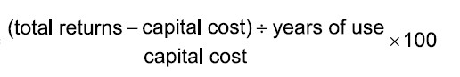

IB Docs (2) Team
IB Docs (2) Team

Payback period & Average rate of return
Investment appraisal is the formal process of quantifying the financial risks of an investment decision. It helps to determine if a capital investment project is worthwhile, by examining the costs of the investment and the expected return on investment.
Hence, investment appraisal enables managers and entrepreneurs (as decision makers) to make a more informed choices, based on quantitative methods of evaluating different investment options. Whilst qualitative factors may also be considered in decision-making, these can be rather subjective in nature.
For this section of the syllabus, all students (HL and SL) need to learn two methods of investment appraisal:
The payback period (PBP) - the time it takes for the initial amount of money invested to be repaid using the gains from the original investment.
the average rate of return (ARR) - the average annual profit of an investment project expressed as a percentage of the initial amount of money invested in the project.
Note: Within the IB syllabus, there are three quantitative methods of investment appraisal: the payback period (PBP), average rate of return (ARR) and net present value (NPV) - the latter methods applies to HL only students.
The payback period (PBP) is a method of investment appraisal that considers the time it takes for the initial amount of money invested to be repaid using the gains from the original investment. This means the PBP calculates how long it will take a business to break-even on (or “pay back”) its investment. The PBP is measured in terms of years and/or months. The original amount of the investment is known as the capital outlay or principal.
Case Study - Investment appraisal in Hollywood
Universal Studios’ Jurassic World earned a record $511.8 million in global sales during its first weekend around the world in June 2015. The blockbuster movie was budgeted at $150 million, which represents a 341.2% return on investment in a single weekend. That’s a rather quick payback period! Warner Bros’ Harry Potter and the Deathly Hallows - Part 2 set the previous record of $483.2 million back in 2011.
As a quantitative management tool, the PBP helps to assess whether a project is financially worthwhile and to justify the capital expenditure needed for the investment.
In the examinations, the annual net cash flow figures from an investment decision are usually given as an average or constant amount. In such cases, the PBP can be calculated using the formula:
Cost of investment
Contribution per month
A shorter payback period is preferred to a longer one, as it minimises the risks of an investment project and earns profit for the business at an earlier date. The larger the contribution (or net cash flow) per month, the shorter the payback period.
Exam Practice Question 1
Supreme Computing Inc. is considering spending $71,500 on new 3D printers. The annual contribution from this investment is forecast to be $33,000.
Calculate the payback period for Supreme Computing Inc. [2 marks]
 Teacher only box
Teacher only box
Answers
$71,500 ÷ ($33,000 / 12) = 26 months
So, the payback period = 2 years and 2 months.
Award [1 mark] for the correct answer.
Award [1 mark] for showing appropriate working out.
If the net cash flows (NCF) from an investment project are not the same for each time period, then the above PBP formula cannot be used. Instead, it is necessary to calculate the cumulative net cash flows in order to calculate the payback period. Essentially, the cumulative net flow for a particular year is the cumulative net cash flow in previous year plus the net cash flow of the current year, as shown in the example below.
Year | Net cash flow | Cumulative net cash flow |
1 | $20,000 | $20,000 |
2 | $24,000 | $44,000 |
3 | $30,000 | $74,000 |
4 | $24,000 | $98,000 |
5 | $20,000 | $118,000 |
Suppose that Thornton Inc. is deciding whether to spend $78,000 on a new machine that is expected to generate the net cash flow over 5 years as shown above. To calculate the PBP (when the net cash flow or contribution is not a fixed amount per time period), there are several important steps:
Calculate the cumulate net cash flows (see table above).
Identify the year in which the cumulative NCF is equal to or greater than the initial cost of the investment (Year 4 in this example).
Calculate the monthly NCF in that year (so in Year 4, the monthly NCF = $24,000 ÷ 12 = $2,000 per month.
Find the shortfall to reach payback in the previous year ($78,000 – $74,000), i.e. the initial amount spent on the investment minus the cumulative NCF in the previous year before reaching payback.
Divide the difference found in Step 4 by the answer in Step 3, i.e. $4,000 ÷ $2,000 = 2 months.
Exam Practice Question 2
Rowlands Printing Co. is considering an investment of $380,000 on new printing machines. The project is expected to generate the following net cash flows in the five years that the machines are expected to last, before they need replacing and upgrading. Rowlands Printing Co. has suffered from liquidity problems recently, although remains profitable. The management team would therefore prefer a shorter payback period for any investment project.
Year | Net cash flow |
1 | $120,000 |
2 | $140,000 |
3 | $180,000 |
4 | $150,000 |
5 | $110,000 |
(a) Define the term payback period. [2 marks]
(b) Calculate the payback period for Rowlands Printing Co. [2 marks]
(c) Comment on whether Rowlands Printing Co. should invest in the new printing machines. [4 marks]
 Teacher only box
Teacher only box
Answers
(a) Define the term payback period. [2 marks]
The payback period is a method of investment appraisal, used to calculate the estimated time it takes for the net cash flows (or contribution) of an investment project to recoup the initial costs of the investment expenditure.
Award [1 mark] for an answer that demonstrates a limited understanding of the payback period.
Award [2 marks] for an answer that demonstrates a clear understanding of the payback period.
(b) Calculate the payback period for Rowlands Printing Co. [2 marks]
To calculate the PBP, the cumulative net cash flows are needed:
Year | Net cash flow | Cumulative net cash flow |
1 | $120,000 | $120,000 |
2 | $140,000 | $260,000 |
3 | $180,000 | $440,000 |
4 | $150,000 | $590,000 |
5 | $110,000 | $700,000 |
The PBP occurs between years 2 and 3 (as the cumulative NCF above $400,000 by the end of the 3rd year)
By the end of the 2nd year, there is a shortfall of $120,000 ($380,000 less $260,000) needed to recover the investment costs of $380,000
In Year 3, the total NCF is $180,000, i.e. the monthly NCF = $15,000
Hence, it will take 8 months to reach payback in the 3rd year ($120,000 ÷ $15,000)
Hence, the PBP = 2 years and 8 months
Award [1 mark] for the correct answer.
Award [1 mark] for showing appropriate working out.
(c) Comment on whether Rowlands Printing Co. should invest in the new printing machines. [4 marks]
As the payback period occurs before the end of the third year, Rowlands Printing Co. can earn profit for the remaining two years and four months of the 5-year project (or 28 months out of the 60 months in total). So, this is a relatively safe (or low risk) investment. However, as the firm “has suffered from liquidity problems recently”, it may not be able to wait 2 years and ten months in order to recoup the initial cost of the investment.
Award [1 – 2 marks] for showing some understanding of the decision to be made (to invest or not, based on the calculated PBP). There is a lack of application to the stimulus in the case study.
Award [3 – 4 marks] for a good level of understanding of the decision to be made (to invest or not, based on the calculated PBP). There is relevant application to the stimulus in the case study.
Advantages of the payback period
It is the easiest and fastest method to calculate investment appraisal.
The results are easy to understand.
It is useful for businesses that suffer from cash flow problems, such as small sole traders, or those trying to survive a recession.
It is also suitable for businesses in fast-changing industries, where products and trends can become outdated quite quickly.
It aids decision making, as managers will tend to choose the investments with a short PBP in order to reduce risks.
Disadvantages of the payback period
It does not take into account the timing of cash flows and contributions to profit – the reality is that money received in the future is worth less than money received today.
The PBP method of investment is not usually suitable for determining long-term projects with a long PBP, as this increasing the risks of an investment project.
There is no consideration of the potential net benefits after the PBP. For example, the useful life of the investment project is not considered by the PBP.
For most businesses, profit is the main goal. The PBP does not reveal the profitability of an investment, but focuses instead on the length of time needed to recoup the costs of the project. Hence, the PBP a potentially highly profitable investment project could be overlooked as it has a longer payback period.
Top tip!
For the PBP, tell students to round up the figure. For example, if the answer is 20.6 months, then the firm would have fully reaped back the cost of investment in the 21st month.
Exam Practice Question 3
Lewis & Co. is considering whether to pay for an annual subscription to an advertising agency at a total cost of $80,800 for the next 5 years. The advertising agency predicts the net cash inflow from this will be $28,200 of additional income per year for the company.
Calculate the payback period for Lewis & Co. [2 marks]
 Teacher only box
Teacher only box
Answer
PBP = 80,800 / (28,200/12) = 80,800 / 2,350 = 34.4 months
This means payback occurs during the 35 month, i.e. the PBP is 2 years and 11 months.
Award [1 mark] for the correct answer.
Award [1 mark] for showing appropriate working out.
Exam Practice Question 4
Reed Taxi Co. (RTC) is deciding whether to spend $38,000 on a new passenger vehicle. RTC expects the net cash flow from this investment will average $12,000 per year over 4 years.
| (a) | Calculate the payback period for RTC. | [2 marks] |
| (b) | Calculate the average rate of return (ARR) for RTC. | [2 marks] |
| (c) | Using your answers from above, suggest why the RTC might be undecided about whether to proceed with the purchase of the new passenger vehicle. | [4 marks] |
Answers
(a) Calculate the payback period for RTC. [2 marks]
- Payback period (PBP) = Cost of project ÷ Annual anticipated profits
- PBP = $38,000 / $12,000 = 3 years and 2 months
Award [1 mark] if the calculation is incorrect, but the working out is accurate, or if the calculation is correct but the working is not shown.
Award [2 marks] if the calculation is correct. Appropriate working out is shown.
(b) Calculate the average rate of return (ARR) for RTC. [2 marks]
ARR = (Average yearly profit / Capital employed) × 100
Total profit = ($12,000 × 4) – $38,000) = $10,000
Annual profit = $10,000 / 4 = $2,500
($2,500 / $38,000) × 100 = 6.58%
Award [1 mark] for the correct answer and [1 mark] for showing appropriate working out.
(c) Using your answers from above, suggest why the RTC might be undecided about whether to proceed with the purchase of the new passenger vehicle. [4 marks]
The PBP is relatively long for RTC (3 years and two months) as this project is anticipated to last only 4 years, by which time the passenger vehicle will need to be replaced. Hence, RTC is only able to earn profit for the last 10 months.
The ARR is 6.58%, meaning that the yearly net cash flow (or total returns) of $12,000 on an investment project that costs $38,000 yields $6.58 for every $100 invested. If RTC cannot earn a higher rate of return on the investment cost of $38,000, this yield may be attractive to the company.
Award [1 – 2 marks] if the response shows some understanding of the demands of the question, although there are some noticeable mistakes, misunderstandings, or omissions.
Award [3 – 4 marks] if the answer shows a good understanding of the demands of the question, with reference to both investment appraisal methods. Award for up [3 marks] for an unbalanced response.
Exam Practice Question 5
May Awady Stationers (MAS) is considering the purchase of a new state-of-the-art photocopier which would cost the company $18,000. The photocopier is expected to generate the following net cash flows (or total returns) over the next 5 years, when it is expected to be replaced.
Year | 1 | 2 | 3 | 4 | 5 |
| Net cash flow (total returns) | $4,500 | $5,500 | $5,000 | $4,200 | $3,000 |
| (a) | Define the term net cash flow. | [2 marks] |
| (b) | Calculate the payback period for May Awady Stationers (MAS). | [2 marks] |
| (c) | Calculate the average rate of return for MAS. | [2 marks] |
| (d) | Using your answers from above to explain whether MAS should purchase the new state-of-the-art photocopier. | [4 marks] |
Answers
(a) Define the term net cash flow. [2 marks]
Net cash flow (NCF) is the numerical difference between a firm’s total cash inflows and its total cash outflows, per time period.
Award [1 mark] for a definition that shows some understanding of net cash flow.
Award [2 marks] for a definition that shows a clear understanding of net cash flow, similar to the example above.
(b) Calculate the payback period for May Awady Stationers (MAS). [2 marks]
Year | 1 | 2 | 3 | 4 | 5 |
Net cash flow (NCF) | 4,500 | 5,500 | 5,000 | 4,200 | 3,000 |
Cumulative NCF | 10,000 | 15,000 | 19,200 | 22,200 |
MAS reaches its PBP within year 4 when the NCF ($19,200) exceeds the cost of the investment ($18,000).
Shortfall in Year 3 = $18,000 – $15,000 = $3,000 to reach payback
Monthly average NCF in Year 4 = $4,200 / 12 = $350
$3,000 / $350 = 8.57 months (or 9 months)
Hence, PBP = 3 years and 9 months
Award [1 mark] if the calculation is incorrect, but the working out is accurate, or if the calculation is correct but the working is not shown.
Award [2 marks] if the calculation is correct. Appropriate working out is shown.
(c) Calculate the average rate of return for MAS. [2 marks]
Year | 1 | 2 | 3 | 4 | 5 |
NCF ($) | 4,500 | 5,500 | 5,000 | 4,200 | 3,000 |
Cumulative NCF ($) | 10,000 | 15,000 | 19,200 | 22,200 |
Total profit = $22,200 – $18,000 = $4,200
Average profit = $4,200 / 5 = $840
Hence, ARR = $840 / $18,000 = 4.67%
Award [1 mark] if the calculation is incorrect, but the working out is accurate, or if the calculation is correct but the working is not shown.
Award [2 marks] if the calculation is correct. Appropriate working out is shown.
(d) Using your answers from above to explain whether MAS should purchase the new state-of-the-art photocopier. [4 marks]
The PBP for MAS is relatively long (3 years and 9 months) for the project which is anticipated to last 5 years, by which time the state-of-the-art photocopier is likely to become outdated so will need to be replaced. Hence, MAS is only able to earn profit on the investment for a little more than a year – and possibly less if the forecasts are adversely incorrect.
The ARR is 4.67%, i.e., the average annual return is only $4.67 for every $100 invested in this project. However, if MAS needs to have this new photocopier in order to operate efficiently, then it may still be worth the expense.
Award [1 – 2 marks] if the answer shows some understanding of the demands of the question, although there are some noticeable mistakes, misunderstandings, or omissions.
Award [3 – 4 marks] if the answer shows a good understanding of the demands of the question, with consideration of both investment appraisal methods. Award for up [3 marks] for an unbalanced response.
Watch this video to consolidate your understanding of the payback period:
The average rate of return (ARR) is a method of investment appraisal that calculates the average annual profit of an investment project expressed as a percentage of the initial amount of money invested in the project.
The average rate of return measures the forecasted annual profit from a particular investment project, expressed as a percentage of the initial amount of money spent on the investment. The ARR figure for any given investment project is compared to the firm’s predetermined acceptable rate of return. This will help managers to decide whether to accept or reject the proposed investment project. At the very least, the ARR must exceed the prevailing interest rate in banks, otherwise the business is better off placing their money in the bank and earning the interest without the risks associated with investments.
The average rate of return (ARR) is calculated by using either of the following formulae:

or

The higher the value of the ARR, the greater the expected return on investment as a percentage of the amount of money invested in the project. Therefore, a high ARR means the proposed investment project is more financially attractive.
At the same, the higher savings interest rates are, the less attractive an investment project tends to be because this means it could be safer for businesses to just leave their money in the bank to earn the interest. Hence, when interest rates are high, there is less incentive for businesses to take financial risks. This is particularly important for businesses that need to borrow money to finance their proposed investment projects, because higher interest rates increase the costs of borrowing.
Exam Practice Question 6
Chislehurst Garden Centre (CGC) is investigating the feasibility of replacing its fleet of delivery vehicles. The new vehicles would cost $560,000. The investment would increase CGC’s annual sales revenue by $150,000 but raise costs by $50,000 a year. The estimated useful life of the new vehicles is 8 years with no scrap (second-hand) value. The management at CGC prefer all investment projects to have an average rate of return (ARR) of no less than 5%.
(a) Calculate the average rate of return (ARR) of the new delivery vehicles for CGC. [2 marks]
(b) Based on the above answer, comment on whether CGC should purchase the new vehicles. [2 marks]
Answers
(a) Calculate the average rate of return (ARR) of the new delivery vehicles for CGC. [2 marks]
Annual net cash flow (or total returns from the project) = $150,000 – $50,000 = $100,000
Total projected profit = ($100,000 × 8 years) – $560,000 = $240,000
Average annual profit = $240,000 / 8 years = $30,000
ARR = $30,000 ÷ $560,000 = 5.36%
Award [1 mark] for the correct answer.
Award [1 mark] for showing appropriate working out.
(b) Comment on whether CGC should purchase the new vehicles. [2 marks]
According to the ARR method of investment appraisal, CGC management may well decide to proceed and purchase the new delivery vehicles to replace their existing fleet. This is because the estimated annual return averages of 5.36% is (slightly) greater than the management’s desired rate of return of at least 5%, although this is very marginal.
Award [1 mark] for an answer that shows limited understanding of the ARR in the context of the question.
Award [2 marks] for an answer that shows why the management team at CGC is likely to go ahead with the investment based on the ARR calculation.
Advantages of the average rate of return (ARR)
It is relatively straightforward to calculate, and easy for people to understand.
Unlike the PBP (payback period), the ARR focuses on the profits of a particular project, rather than length of time it takes for a project to pay for itself.
The ARR can be used by managers and decision-makers to judge or evaluate the firm's financial performance.
The methods can be useful to help managers, shareholders and other decision makers to compare the relative attractiveness of different investment projects that cost different amounts of money (as the ARR figure is expressed as a percentage of the initial costs).
Disadvantages of the average rate of return (ARR)
The ARR ignores the timings of future net cash flows, so money received in the future is worth less than it would be if received today. This means the ARR may overestimate the real or true value of the financial returns on an investment.
The ARR focuses on profits (which are not estimates at best, and not entirely received until the distant future), rather than on cash flow (which is the 'lifeblood' of the business). Irrespective of the forecast ARR, without sufficient cash flow, the business will not survive).
The figures used to calculate the ARR are only estimates, so the results or forecasts need to be treated with some caution. The longer the investment project under consideration, the less accurate the forecasts will be; we might know what we have planned to do tomorrow or next week, but less certain about this for 5 or 10 years' time.
ATL Activity (Research skills)
With reference to an organization of your choice, discuss how changes in the external environment have influenced the organization’s investment decisions.
You might find it useful to apply the key concept of change and BMT 3 - STEEPLE analysis when answering the above question.
Also, be prepared to share your finding with the rest of the class.
Get students to investigate at least one investment decision for an organization of their choice. This could include acquisitions, franchising, joint ventures or strategic alliances. Examples of such investment projects might include:
Apple and MasterCard (the first credit card company to offer Apple Pay)
Google and Luxottica (high technology for premium quality eyewear products)
Spotify and Uber (riders can listen to their own playlists)
Star Alliance (one of the largest airline alliances consisting of 27 airlines)
Starbucks and PepsiCo (bottling, distributing and selling Frappuccino coffee)
Tata Coffee and Starbucks (coffee retailer / cafe operators in India).
Students should apply the concept change to back up the potential reasons for these decisions, using STEEPLE analysis as a framework to present their work.
Exam Practice Question 7
Sparks Education Company (SEC) is considering whether to replace its photocopiers and printers for a total cost of $95,000. The expected net cash flow or total contribution per year are shown below. The expected useful life of these equipment is 5 years.
Year | Contribution ($) |
1 | 28,000 |
2 | 32,000 |
3 | 35,000 |
4 | 25,000 |
5 | 22,000 |
Calculate the average rate of return and comment on whether Sparks Education Company (SEC) should replace its photocopiers and printers. [4 marks]
Answer
Year | Total contribution |
1 | 28,000 |
2 | 32,000 |
3 | 35,000 |
4 | 25,000 |
5 | 22,000 |
Total | 142,000 |
The total profit (or total returns) from the project is $142,000 – $95,000 = $47,000
The average annual profit = $47,000 ÷ 5 years = $9,400
Hence, the ARR = $9,400 ÷ $95,000 = 9.89%
Whether Sparks Education Company (SEC) chooses to go for this investment depends on the interest rate compared to the expected ARR of 9.89%. It would also depend on whether SEC had other projects in mind that might yield more than 9.89% annual return, although it is probable that the photocopiers and printers are essential for SEC’s operations.
Award up to [2 marks] for the correct calculation of the ARR, with the working out fully shown.
Award up to [2 marks] for the commentary. There should be consideration of the calculated ARR figure for full marks.
Finally, watch this short video with students to consolidate your understanding the average rate of return (ARR):
Top tip!
Remember to always express your calculations and answers in the correct unit of measurement.
the payback period is expressed in time (years and months)
the ARR is expressed as a percentage (to 2 decimal places).
Top tip!
Note that not all investments will pay off (hence the need for investment appraisal to support management decision making). For example, Professor Dylan Wiliam has shown the doubling the investment expenditure on interactive whiteboards (smart boards) in schools as part of the London Challenge produced no increase in student achievement. The London Challenge was a secondary school improvement programme that was implemented in London, UK, between 2003 and 2011.
Click the hyperlink to return to the Unit 3.8 - Investment appraisal homepage
Click the hyperlink to return to the Unit 3 - Finance & Accounts homepage

 Twitter
Twitter
 Facebook
Facebook
 LinkedIn
LinkedIn